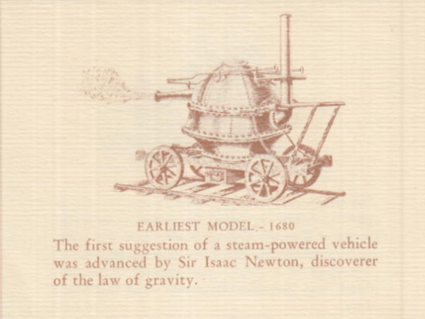
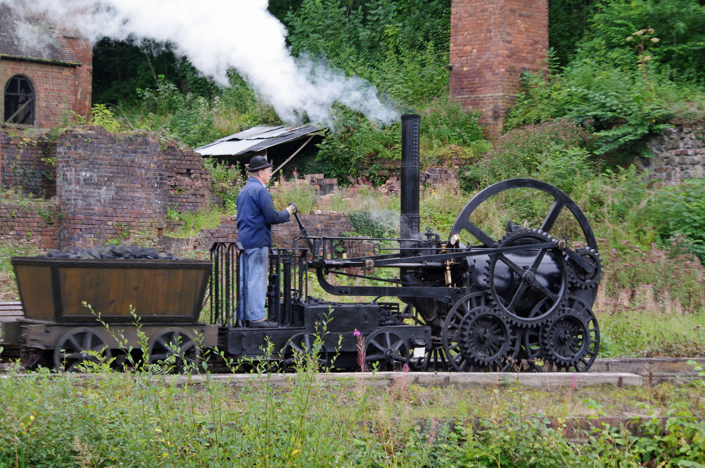

Locomotives as we know them didn't come around until the 1930s, but the first locomotive ever built was invented 130 years before, in 1802. However, before we discuss trains, we must discuss the origins of steam vehicles. In 1680, Sir Isaac Newton himself actually proposed a steam locomotive design, which worked by shooting steam out the back. It was never built, but diagrams were made, and so was a mockup. The first steam vehicle actually built, however, was a car built in 1769 by Nicolas-Joseph Cugnot crashed into a wall and gave the inventor a concussion. After that, steam ambulation largely halted, and it took until 1802 for something big to happen.
In 1802, the first locomotive ever was created. The inventor, a Cornish man, was named Richard Trevithick. Richard Trevithick had previously worked on James Watt's steam engines, but he was one of the first to use steam to propel a vehicle. It was a success, and Trevithick built another engine in 1804. Unfortunately, he died penniless and alone, but he still is regarded as one of the fathers of steam locomotives.
After that, it took until about the 1850s for engines to look like locomotives and less like pipe bombs. Either way, the railroads were still comically unsafe. The link and pin couplers frequently took brakemen's fingers off, and the engines blew up frequently. Finally, the Janney automatic coupler was introduced, which provided a safer way to couple trains without the risk of injury. Furthermore, other improvements such as automatic lubricators meant engineers didn't have to crawl under their engine to service it.
During the 20s and 30s, streamliners came around. These aerodynamic trainsets were easily recognizable and stylishly fast. Also, they allowed railroads to paint their engines and truly show off their company colors, something which ended in the 1890s. The streamliner you see flying below is the Seaboard Air Line's Silver Meteor as it would have looked in the 1930s, but numerous other paint schemes for numerous other railroads existed. Unfortunately, following WWII, the rail industry dropped in favor of cars. Most railroads were abandoned, but the last-ditch effort to save passenger rail was founded in 1971, Amtrak. The effort to save freight rail, Conrail, was founded in '76.
Here's some more info on Conrail if you're interested!